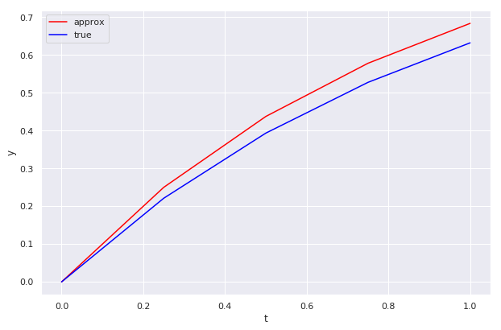
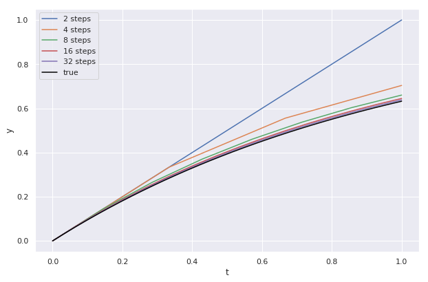
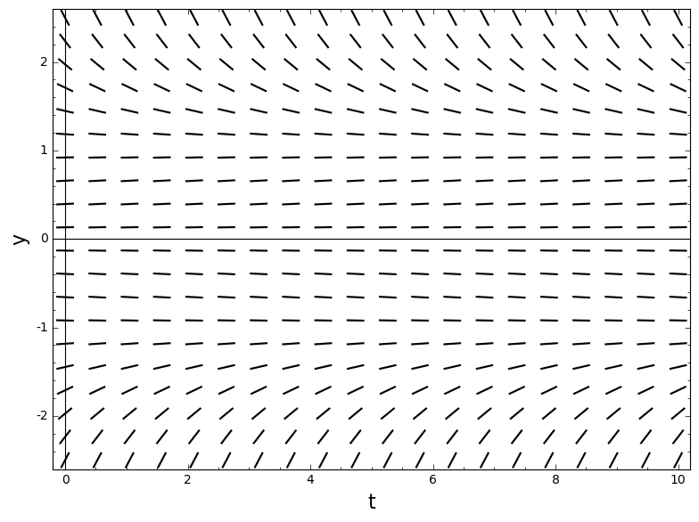
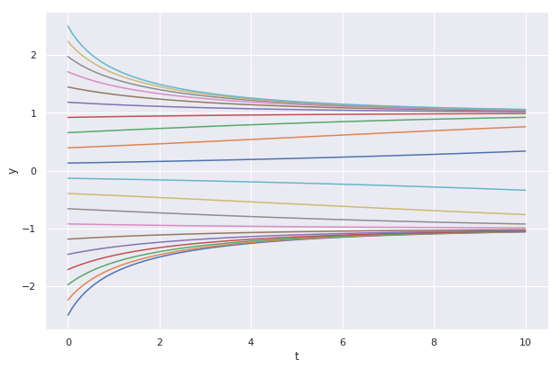
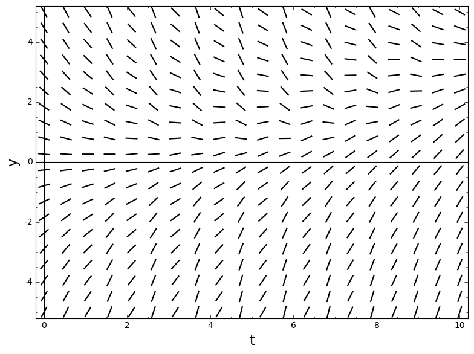
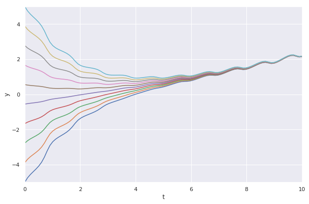

Euler’s method
The basic observation
The reality is, most differential equations are either practically impossible or very tedious to solve by hand. Hence the importance of computational methods to solve ODEs.
Way back in the day, Euler devised an algorithm to solve an initial value problem of the form
\[y' = f(t, y), \, \, \text{ with } \, \, y(t_0) = y_0\]Here’s the idea: if \(\Delta t\) is a small time interval starting at \(t_0\), and \(t_1 = t_0+\Delta t\) (so that \(\Delta t = t_1 - t_0\)) then from the definition of the derivative we should have
\[\frac{y(t_1) - y(t_0)}{\Delta t} \approx y'(t_0) = f(t_0, y_0)\]Rearranging, this says
\[y(t_1) \approx y_0 + f(t_0, y_0) \Delta t\]Set \(y_1 = y_0 + f(t_0, y_0) \Delta t\).
Iterating on the basic observation
Now we can repeat this process, but starting with \(t_1\) and \(y_1\) (instead of \(t_0\) and \(y_0\)). We’ll get \(t_2 = t_1+ \Delta t\), and
\[y_2 = y_1 + f(t_1, y_1) \Delta t\]And so on - what we’re doing is iterating on the equation
\[y_{i+1} = y_i + f(t_i, y_i) (t_{i+1} - t_i)\]As an algorithm, Euler’s method takes as input a differential equation \(y' = f(t, y)\), a list of times \(t_0, t_1, \dots, t_n\), and an initial condition \(y(t_0) = y_0\). It then uses the equation \(y_{i+1} = y_i + f(t_i, y_i) (t_{i+1} - t_i)\) to produce estimates \(y(t_1) \approx y_1, \dots, y(t_n) \approx y_n\)
Implementing the algorithm
Below, we build a python function called euler which takes as input
- a function \(f(t, y)\) (the right hand side of the ODE),
- an initial value \(y_0\)
- a “time” interval \([t_{min}, t_{max}]\) (with \(t_0 = t_{min}\)), and
- a number of steps \(n\) (in other words, \([t_{min}, t_{max}]\) will get broken into \(t_{min} = t_0 < t_1 < t_2 < \dots < t_n = t_{max}\)).
The output of euler will be a pair of arrays t, y, where t = [t_0, t_1, \dots, t_n] is the list of times and y = [y_0, y_1, \dots, y_n] is the list of (approximate) \(y\)-values at those times.
Packages
Most of the work is handled by numpy the standard python package for numerical computing.
# Import some packages
import numpy as np
# Define our function
def euler(f, y_0, t_min, t_max, steps=100):
"""implements euler's method for solving a first order ODE
y' = f(t, y) on an interval [t_min, t_max], with 'steps' number
of iterations. assumes y_0 = y(t_0). Returns 1D arrays t, y"""
# First we need to break the interval [t_min, t_max] into 'steps'
# times. np.linspace does exactly that:
t = np.linspace(t_min, t_max, steps)
# We initialize the y array as all zeros:
y = np.zeros(steps)
# then set y[0]= y_0
y[0] = y_0
# Now we run a 'for' loop, computing the
# rest of the y_i's one at a time:
for i in range(0, steps-1):
y[i+1] = y[i] + f(t[i], y[i])*(t[i+1] - t[i])
# that's it! return t, y:
return t, y
# Now import some plotting packages:
from matplotlib import pyplot as plt
plt.rcParams['figure.figsize'] = [10, 6.5]
import seaborn as sns
sns.set()
Testing Euler’s method
Example
To test our work, let’s use the simple equation \(y' = - y + 1\)
def test_f(t, y):
return (-1)*y + 1
# To see the method in action, use 5 steps:
t, y = euler(test_f, 0, 0, 1, 5)
# Plot
plt.plot(t, y, c='red', label='approx')
plt.plot(t, 1 - np.exp(-t), c='blue', label='true')
plt.xlabel('t')
plt.ylabel('y')
plt.legend()
<matplotlib.legend.Legend at 0x7fe69d2d2710>

# Using more steps, it gets harder to tell the curves appart:
for steps in [2, 4, 8, 16, 32]:
t, y = euler(test_f, 0, 0, 1, steps)
# Plot
plt.plot(t, y, label=str(steps)+' steps')
plt.plot(t, 1 - np.exp(-t), c='black', label='true')
plt.xlabel('t')
plt.ylabel('y')
plt.legend()
<matplotlib.legend.Legend at 0x7fe69d1ff7b8>

Example
The autonomous equation \(y' = \frac{y - y^3}{10}\) (slope field below).

Note that there are stable equilibria at \(y= \pm 1\), and an unstable equilibrium at \(y=0\). We could solve this equation (using partial fractions!) but instead let’s just use Euler’s method:
def f(t, y):
return (y - y**3)/10
# Compute/plot solution curves for various initial conditions:
for y_0 in np.linspace(-2.5, 2.5, 20):
t, y = euler(f, y_0, 0, 10, 100)
plt.plot(t, y)
plt.xlabel('t')
plt.ylabel('y')
Text(0, 0.5, 'y')

Example
The first order linear equation
\[y' + \frac{y}{2+ \sin(2 \pi t)} = e^{0.1 t} - 1\]
# Define function on the RHS of the ODE:
def f(t, y):
return np.exp(0.1*t) - 1 - y/(2+ np.sin(2*np.pi*t))
# Now plot solution curves for various initial conditions:
y_not = np.linspace(-5, 5, 10)
for y_0 in y_not:
t, y = euler(f, y_0, 0, 10, 100)
plt.plot(t, y)
plt.xlim(0, 10)
plt.ylim(-5, 5)
plt.xlabel('t')
plt.ylabel('y')
Text(0, 0.5, 'y')
